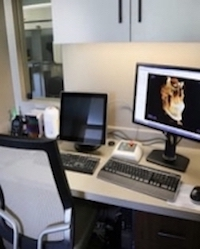

About Me
I was born in Batavia, IL, a small town outside of Chicago near farm land. If your from the Mid-West you talk a lot about the weather. I graduated from high school when I was 16 and my Orthodontist asked if I would like to come work for him for the summer and that was the beginning of my mostly life-long career in the Orthodontic field. I moved to FL when I was 20, the "weather" was much nicer! I graduated with an Associate Degree from Florida State College in Jacksonville and continued my course work. My studies were focused on Anatomy, Physiology, Cell/Micro Biology, and the management and delivery of healthcare and healthcare systems. I cemented my knowledge gained from my education with a year long position as Lab Manager at the Medical College of Virginia at VCU in Richmond, VA working on an NIH funded grant and have my name listed as author on three published scientific papers.
I have held many positions over the course of my 20+ year career. My higher level job titles have included:
- Practice Manager("Hands On" manager for logistics and operations of 30 orthodontic offices-same employer)
- Systems and Network Administrator(Novell Network Certified(same employer)
- Director of Professional Relationships(same employer)
- Administrative Director at CU-Denver School of Orthodontics
- Administrative Director at The Georgia School of Orthodontics(Acting Direcotr for 6 months)
- Practice Management Consultant
Today, I mostly act as a Consultant for large multi-practice organizations or Orthodontic Schools, like The Georgia School of Orthodontics (GSO) in Atlanta, GA. I am also part owner and CFO for ToxySynergy,LLC (My husband acts as a scientific consultant for many companies and I manage all financial and tax related issues). I have had extensive exposure to the development, conversion, implementation and management of many specialty practice software programs. I am currently enrolled at the University of Richmond School of Professional and Continuing Studies (SPCS) in the Coding Boot Camp. The course is intensive and extensive in covering many areas of web design and development and many different programing languages. I am continualy open to new learning experiences and new challenges.
Oh, if you happen to catch me looking at your teeth, don't be concerned! I just love to see people SMILE!
Connect with Me